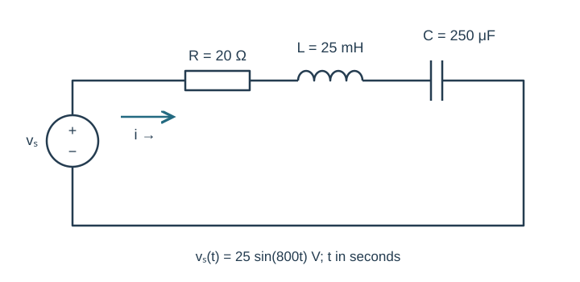
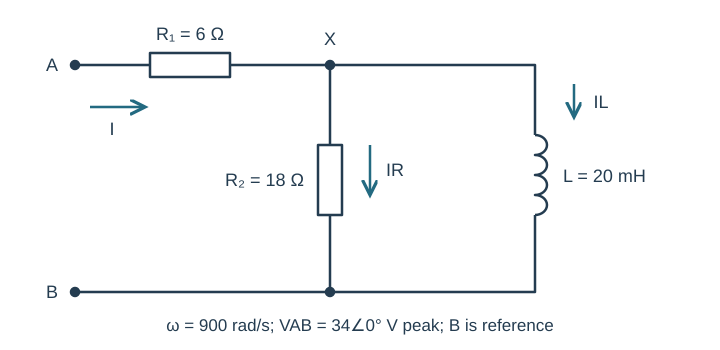
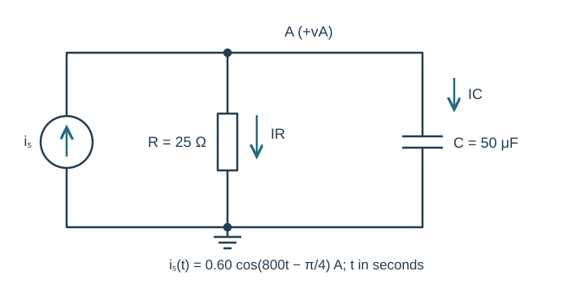
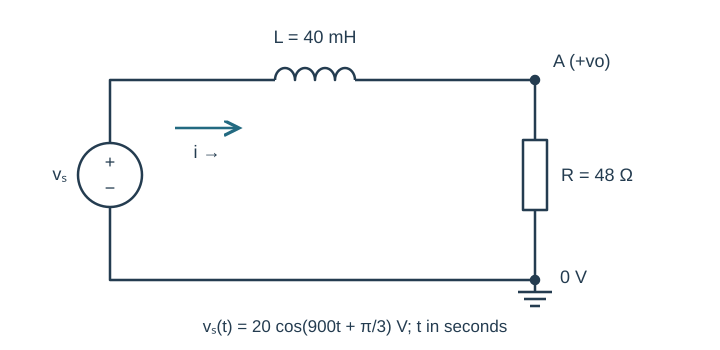
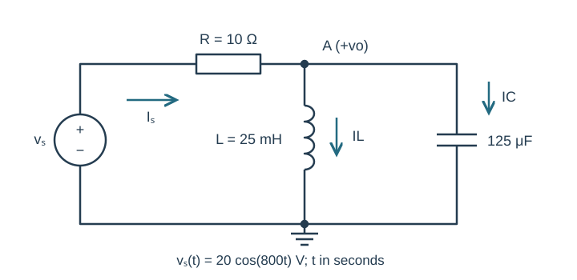

Course practice / Batch 16 / 2026-10-12 PDT
ENGR 202
正弦、相量与阻抗
Sinusoids, phasors & impedance · 第 16 组：HW 1 风格 5 题 + HW 2 风格 5 题
Normalize a cosine written with a negative time coefficient
The voltage is \(v(t)=5\cos(-600\pi t+\pi/3)\;\mathrm V\), with t in seconds.
- Rewrite with positive angular frequency and positive peak amplitude. Find frequency, period and the cosine-reference peak phasor.
- Find v(0), the sign of its initial slope, and the first positive maximum, downward zero crossing and minimum at or after t=0. Give event times in ms.
- Sketch one period with labeled axes and events. Explain why the written negative coefficient of t does not require reporting a negative physical frequency for this real cosine.
中文提示（不含解答）
余弦是偶函数；把整个角度取反后，相位也需要一起改变。
Advance a sine and double its amplitude
Let \(x(t)=3\sin(900t-\pi/6)\;\mathrm V\) and \(y(t)=2x(t+\pi/2700\;\mathrm s)\).
- Find the period and the advance in ms and as a fraction of the period. State the phase change caused by the advance.
- Write x(t),y(t) as positive-amplitude cosines and find their peak phasors. Describe the effect of the factor 2 separately from the time advance.
- Compare x,y at t=0 and t=π/1800 s. Draw both phasors to scale; use their lengths and directions to verify both transformations.
中文提示（不含解答）
时间移动改变相位，外部正因子改变长度；正弦转余弦还需要减去 90°。
Divide two lower-half-plane complex numbers
Let \(a=1-j4\) and \(b=-3-j2\).
- Compute a+b, ab, a/b and 1/b in rectangular form.
- Convert a,b,ab,a/b to polar form, using positive magnitudes and principal phases in (−180°,180°].
- Verify (a/b)b=a and b(1/b)=1. Plot a,b with equal axis scales and explain why their quotient can have positive real and imaginary parts even though both inputs have negative imaginary parts.
中文提示（不含解答）
除法可以乘以分母共轭；最后用直角坐标的符号检查相位象限。
Opposite component phasors leave a small nonzero result
The voltage is \(v(t)=4\cos(800t+\pi/6)+6\sin(800t-\pi/3)\;\mathrm V\).
- Find both cosine-reference component phasors, add them in rectangular form, and find total positive magnitude and principal phase.
- Write v(t) as one positive-amplitude cosine. Check the original and combined forms at t=0 and t=π/1600 s.
- Draw a tip-to-tail plot with equal scales and show whether the two component phasors are parallel, opposite, or neither. Explain why adding their magnitudes would not give the correct amplitude.
中文提示（不含解答）
先统一成余弦参考；相反方向的矢量相加时，结果方向由较长的分量决定。
Recover signed cosine and sine coefficients from a phasor
A voltage at ω=900 rad/s has cosine-reference peak phasor \(V=-5+j12\;\mathrm V\). Write it in the form \(v(t)=A\cos(900t)+B\sin(900t)\), where A and B are allowed to be signed real coefficients.
- Find A,B by expanding the real-part reconstruction. Check v(0) and v(π/1800 s) from both the phasor and your expression.
- Convert V to polar form and write one positive-amplitude cosine with its phase in (−180°,180°].
- Rewrite each individual component using a positive amplitude and a phase shift, then draw their tip-to-tail sum. Explain the sign relating the imaginary part of a cosine-reference phasor to the sine coefficient.
中文提示（不含解答）
取实部时 j 与指数中的正弦项相乘会产生负号；不要直接把虚部当作正弦系数。
A sine-driven inductive loop puts current in quadrant three
The source \(v_s(t)=25\sin(800t)\;\mathrm V\) drives series R=20 Ω, L=25 mH and C=250 μF. Current is clockwise from the positive source terminal. Element voltages are passive drops along that direction.
- Copy the time-domain circuit and draw the impedance circuit, including source phasor. Find ZL,ZC,total Z and I in rectangular/polar form.
- Write steady-state i(t), calculate VR,VL,VC and verify KVL. State how far the current leads or lags the source.
- Predict i(0) and i(π/1600 s). For optional LTspice, state source frequency in Hz and sine phase, then compare both phase positions in a settled cycle with current reference direction, units and two cursor readings.

中文提示（不含解答）
先把正弦源转成余弦相量；电流的主相位需要结合第三象限判断。
A resistor feeds a parallel RL node
At ω=900 rad/s, terminal A connects through R₁=6 Ω to node X. R₂=18 Ω and L=20 mH each connect X to terminal B. B is reference. Apply VAB=34∠0° V peak. Input current points A to X and both branch currents point X to B.
- Draw the impedance circuit. Reduce the parallel block and find total ZAB in rectangular/polar form.
- Find input current, VX, resistor-branch current and inductor-branch current as complex phasors.
- Find the R₁ drop. Verify KCL and VAB=VR1+VX, and state whether input current leads or lags the applied voltage.

中文提示（不含解答）
并联电阻与电感先化简；节点 X 的电压对应的是并联块而非整个输入阻抗。
A phased current source drives a parallel RC pair
The source \(i_s(t)=0.60\cos(800t-\pi/4)\;\mathrm A\) injects current upward into node A. R=25 Ω and C=50 μF each connect A to ground. Define vA positive at A, with both passive branch currents downward.
- Copy the circuit and draw its impedance version including source phasor. Find total admittance and equivalent impedance.
- Find VA in rectangular/polar form and write vA(t). Compute resistor and capacitor currents and verify KCL with complex components.
- Predict vA(0) and vA(π/1600 s). State the node-voltage phase relative to the source current; optionally check the two phase positions in a late steady-state simulation cycle with labeled units and cursors.

中文提示（不含解答）
并联相加导纳；节点电压相位等于源电流相位减去总导纳相位。
An input inductor changes a resistor output phase
The source \(v_s(t)=20\cos(900t+\pi/3)\;\mathrm V\) connects through L=40 mH to node A. R=48 Ω connects A to ground, also joined to source negative. Current is clockwise through L then R. Output vo is positive at A relative to ground.
- Draw the impedance circuit. Find total impedance and current, then obtain Vo using an impedance divider, in rectangular/polar form.
- Write vo(t), find the inductor passive drop VL and check Vs=VL+Vo. State output amplitude relative to source amplitude and the phase lag or lead.
- Predict vo(0) and vo(π/1800 s). Explain why changing the source phase shifts the output phase but does not change this circuit’s amplitude ratio at the stated frequency.

中文提示（不含解答）
输出取电阻上的压降；源相位不应混入阻抗本身。
Two reactive load currents partially cancel
The source \(v_s(t)=20\cos(800t)\;\mathrm V\) connects through R=10 Ω to node A. L=25 mH and C=125 μF each connect A to ground. Output vo is positive at A. Source current flows through R toward A, and both reactive-branch currents are downward. Use only the stated frequency.
- Draw the impedance circuit. Find the parallel load impedance, total input impedance and source current.
- Find Vo in rectangular/polar form and write vo(t). Calculate IL,IC and the resistor drop, then check KCL and KVL.
- Predict vo(0) and vo(π/1600 s). Compare the two branch-current magnitudes with their phasor sum, explaining why a branch magnitude can exceed the input-current magnitude. Optionally verify the two output samples after transients settle in a labeled simulation plot.

中文提示（不含解答）
两个无源支路仍可能有相反的相量方向；KCL 必须相加带相位的电流。